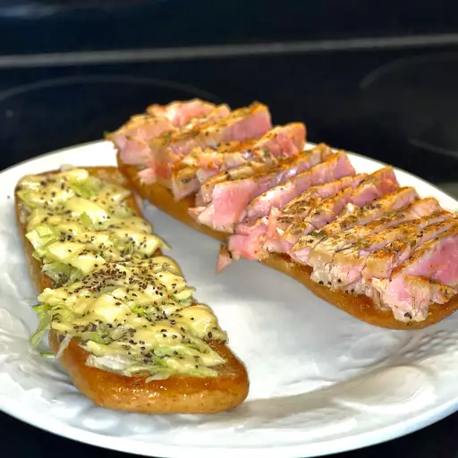

Seared Ahi Tuna Steaks

Description
This is an elegantly simple way to cook ahi tuna steaks that any
restaurant would be jealous of! Serve with soy sauce or your favorite
dipping sauce.
Ingredients
- 2 (5 ounce) ahi tuna steaks
- 1 teaspoon kosher salt
- 1/4 teaspoon cayenne pepper (Optional)
- 1/2 tablespoon butter
- 2 tablespoons olive oil
- 1 teaspoon whole peppercorns
Directions
-
Pat tuna steaks dry and season on both sides with salt and cayenne
pepper.
- Melt butter in a skillet over medium-high heat.
-
Add olive oil and pepper corns; cook until peppercorns soften and pop,
about 5 minutes.
-
Gently place seasoned tuna in the skillet and cook to desired doneness,
anywhere from 30 seconds to 1 1/2 minutes per side.
- Slice tuna into 1/4-inch thick slices to serve.
- Enjoy!